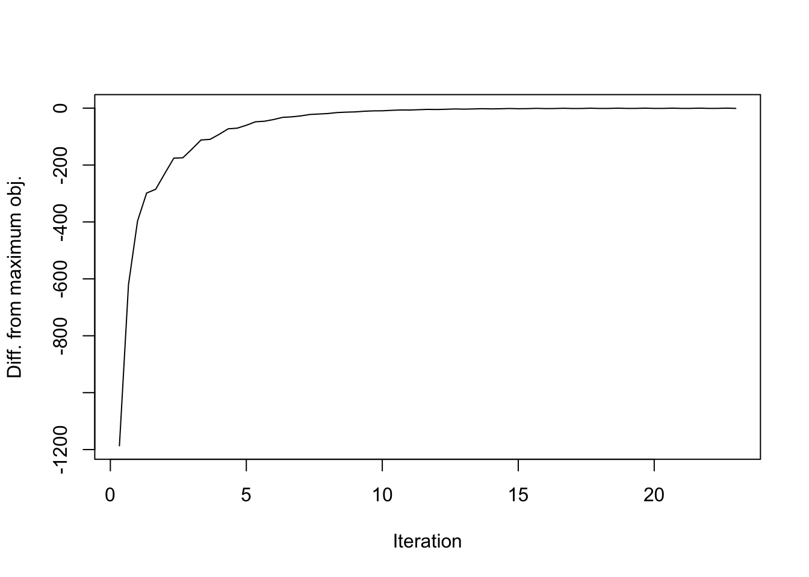
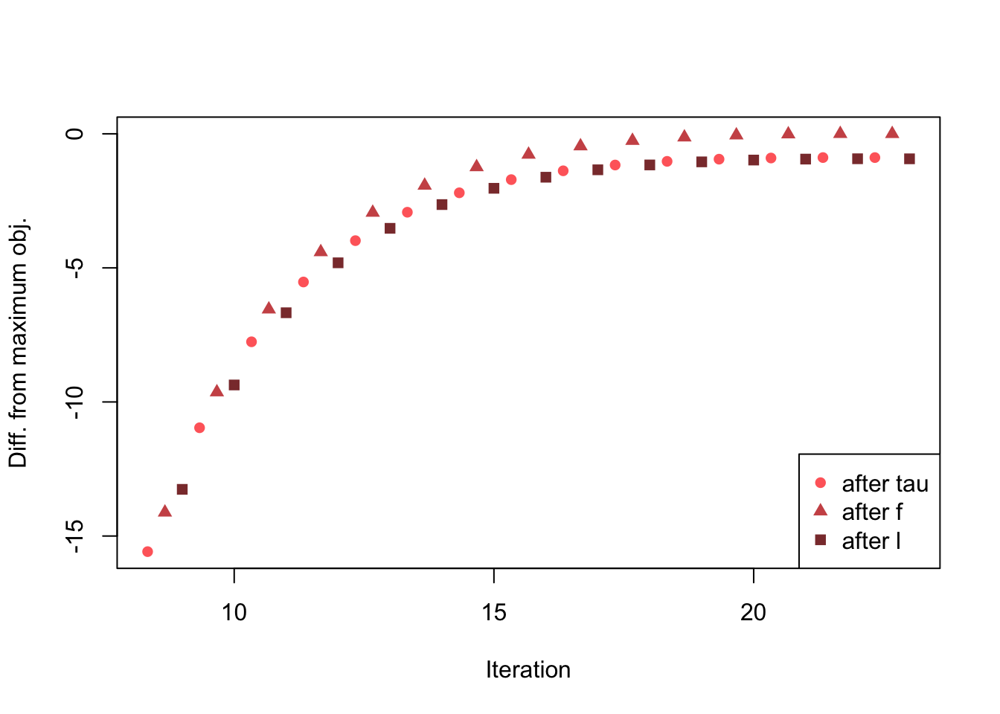

Last updated: 2018-07-15
workflowr checks: (Click a bullet for more information) ✔ R Markdown file: up-to-date
Great! Since the R Markdown file has been committed to the Git repository, you know the exact version of the code that produced these results.
✔ Environment: empty
Great job! The global environment was empty. Objects defined in the global environment can affect the analysis in your R Markdown file in unknown ways. For reproduciblity it’s best to always run the code in an empty environment.
✔ Seed:
set.seed(20180714)
The command set.seed(20180714) was run prior to running the code in the R Markdown file. Setting a seed ensures that any results that rely on randomness, e.g. subsampling or permutations, are reproducible.
✔ Session information: recorded
Great job! Recording the operating system, R version, and package versions is critical for reproducibility.
✔ Repository version: 8258811
wflow_publish or wflow_git_commit). workflowr only checks the R Markdown file, but you know if there are other scripts or data files that it depends on. Below is the status of the Git repository when the results were generated:
Ignored files:
Ignored: .DS_Store
Ignored: .Rhistory
Ignored: .Rproj.user/
Ignored: docs/.DS_Store
Ignored: docs/figure/.DS_Store
Untracked files:
Untracked: analysis/objective2.Rmd
Untracked: docs/figure/objective2.Rmd/
Here I begin to look into why the FLASH objective function can decrease after an iteration.
I’m using the “strong” tests from the MASH paper GTEx dataset. The first problem appears when fitting the fourth factor. Notice that in the final iteration, the objective decreases by a very small amount and a warning is displayed.
# devtools::install_github("stephenslab/flashr", ref="trackObj")
devtools::load_all("/Users/willwerscheid/GitHub/flashr")Loading flashr# devtools::install_github("stephenslab/ebnm")
devtools::load_all("/Users/willwerscheid/GitHub/ebnm")Loading ebnmgtex <- readRDS(gzcon(url("https://github.com/stephenslab/gtexresults/blob/master/data/MatrixEQTLSumStats.Portable.Z.rds?raw=TRUE")))
strong <- gtex$strong.z
res <- flash_add_greedy(strong, Kmax=3, verbose=FALSE)fitting factor/loading 1fitting factor/loading 2fitting factor/loading 3res <- flash_add_greedy(strong, f_init=res$f, Kmax=1, verbose=TRUE)fitting factor/loading 1Objective:-1298710.77860735Objective:-1297543.73149909Objective:-1297376.91372722Objective:-1297290.91328428Objective:-1297238.97898488Objective:-1297206.99734743Objective:-1297186.95839066Objective:-1297174.12546441Objective:-1297165.70006397Objective:-1297160.02771237Objective:-1297156.13460765Objective:-1297153.44144442Objective:-1297151.57875474Objective:-1297150.29283403Objective:-1297149.40714787Objective:-1297148.79985992Objective:-1297148.38694209Objective:-1297148.11014097Objective:-1297147.92880915Objective:-1297147.81438557Objective:-1297147.74670432Objective:-1297147.71143507Objective:-1297147.69841607Objective:-1297147.70039797Warning in r1_opt(flash_get_Rk(data, f, k), flash_get_R2k(data, f, k), f
$EL[, : An iteration decreased the objective. This happens occasionally,
perhaps due to numeric reasons. You could ignore this warning, but you
might like to check out https://github.com/stephenslab/flashr/issues/26 for
more details.performing nullcheckobjective from deleting factor:-1301896.25041515objective from keeping factor:-1297147.70039797nullcheck complete, objective:-1297147.70039797A more granular tracking of the objective function reveals a larger problem. Recall that there are three steps in each iteration: updating the precision matrix, updating the factors (via the prior \(g_f\)), and updating the loadings (via \(g_l\)). Plotting the objective after each step rather than each iteration reveals a sawtooth pattern. (See branch trackObj, file r1_opt.R for the code used to obtain these results.)
obj_data <- as.vector(rbind(res$obj[[1]]$after_tau,
res$obj[[1]]$after_f,
res$obj[[1]]$after_l))
max_obj <- max(obj_data)
obj_data <- obj_data - max_obj
iter <- 1:length(obj_data) / 3
plt_xlab = "Iteration"
plt_ylab = "Diff. from maximum obj."
plot(iter, obj_data, type='l', xlab=plt_xlab, ylab=plt_ylab)
| Version | Author | Date |
|---|---|---|
| 0b30bef | Jason Willwerscheid | 2018-07-15 |
Discarding the first 8 iterations in order to zoom in on the problem area:
obj_data <- obj_data[-(1:24)]
iter <- iter[-(1:24)]
plt_colors <- c("indianred1", "indianred3", "indianred4")
plt_pch <- c(16, 17, 15)
plot(iter, obj_data, col=plt_colors, pch=plt_pch,
xlab=plt_xlab, ylab=plt_ylab)
legend("bottomright", c("after tau", "after f", "after l"),
col=plt_colors, pch=plt_pch)
| Version | Author | Date |
|---|---|---|
| 0b30bef | Jason Willwerscheid | 2018-07-15 |
I backtrack to just before the “bad” update.
res2 <- flash_add_greedy(strong, Kmax=4, stopAtObj=-1297147.7)fitting factor/loading 1fitting factor/loading 2fitting factor/loading 3fitting factor/loading 4flash_get_objective(strong, res2$f) - flash_get_objective(strong, res$f)[1] 0.002208033So at this point, the objective is indeed better than for the flash object attained above. The component parts of the objective are:
fl <- res2$f
data <- flash_set_data(strong)
k <- 4
KL_l <- fl$KL_l[[k]]
KL_f <- fl$KL_f[[k]]
loglik <- flashr:::e_loglik(data, fl)
list(KL_l = KL_l, KL_f = KL_f, loglik = loglik)$KL_l
[1] -8324.579
$KL_f
[1] -128.9953
$loglik
[1] -1227372First I update the precision (I follow the code in r1_opt). Only the “loglik” component is affected by this update:
init_fl = fl
init_KL_l = KL_l
init_KL_f = KL_f
init_loglik = loglik
R2 = flashr:::flash_get_R2(data, fl)
fl$tau = flashr:::compute_precision(R2, data$missing,
"by_column", data$S)
flashr:::e_loglik(data, fl) - init_loglik[1] 0.04309978So the overall objective indeed increases. Now I update the loadings (FLASH updates factors first, but the order of updates is not supposed to affect the monotonicity of the objective function).
s2 = 1/(fl$EF2[, k] %*% t(fl$tau))
s = sqrt(s2)
Rk = flashr:::flash_get_Rk(data, fl, k)
x = fl$EF[, k] %*% t(Rk * fl$tau) * s2
ebnm_l = flashr:::ebnm_pn(x, s, list())
KL_l = (ebnm_l$penloglik
- flashr:::NM_posterior_e_loglik(x, s, ebnm_l$postmean,
ebnm_l$postmean2))
fl$EL[, k] = ebnm_l$postmean
fl$EL2[, k] = ebnm_l$postmean2
fl$gl[[k]] = ebnm_l$fitted_g
fl$KL_l[[k]] = KL_l
flash_get_objective(data, fl) - flash_get_objective(data, init_fl)[1] -0.1154585So the objective has in fact gotten worse. And tightening the control parameters or changing the initialization for the ebnm function does not help matters. For example:
s2 = 1/(fl$EF2[, k] %*% t(fl$tau))
s = sqrt(s2)
Rk = flashr:::flash_get_Rk(data, fl, k)
x = fl$EF[, k] %*% t(Rk * fl$tau) * s2
ebnm_l = flashr:::ebnm_pn(x, s, list(startpar=c(5,5),
control=list(factr=100)))
KL_l = (ebnm_l$penloglik
- flashr:::NM_posterior_e_loglik(x, s, ebnm_l$postmean,
ebnm_l$postmean2))
fl$EL[, k] = ebnm_l$postmean
fl$EL2[, k] = ebnm_l$postmean2
fl$gl[[k]] = ebnm_l$fitted_g
fl$KL_l[[k]] = KL_l
flash_get_objective(data, fl) - flash_get_objective(data, init_fl)[1] -0.1154585The decrease appears too large to be explained by numerical error. Indeed, it would be very surprising to me if EL and EL2 could only be trusted to five digits or so (as would have to be the case to produce errors of the above magnitude).
More seriously, the sawtooth pattern depicted above points to a more regular feature of the optimization. Indeed, it appears that all of the triangles (objectives after updating factors) are biased upwards and all of the squares (objectives after updating loadings) are biased slightly downwards.
The theory appears to be sound, so what is going on here?
sessionInfo()R version 3.4.3 (2017-11-30)
Platform: x86_64-apple-darwin15.6.0 (64-bit)
Running under: macOS Sierra 10.12.6
Matrix products: default
BLAS: /Library/Frameworks/R.framework/Versions/3.4/Resources/lib/libRblas.0.dylib
LAPACK: /Library/Frameworks/R.framework/Versions/3.4/Resources/lib/libRlapack.dylib
locale:
[1] en_US.UTF-8/en_US.UTF-8/en_US.UTF-8/C/en_US.UTF-8/en_US.UTF-8
attached base packages:
[1] stats graphics grDevices utils datasets methods base
other attached packages:
[1] ebnm_0.1-12 flashr_0.5-12
loaded via a namespace (and not attached):
[1] Rcpp_0.12.17 pillar_1.2.1 plyr_1.8.4
[4] compiler_3.4.3 git2r_0.21.0 workflowr_1.0.1
[7] R.methodsS3_1.7.1 R.utils_2.6.0 iterators_1.0.9
[10] tools_3.4.3 testthat_2.0.0 digest_0.6.15
[13] tibble_1.4.2 evaluate_0.10.1 memoise_1.1.0
[16] gtable_0.2.0 lattice_0.20-35 rlang_0.2.0
[19] Matrix_1.2-12 foreach_1.4.4 commonmark_1.4
[22] yaml_2.1.17 parallel_3.4.3 withr_2.1.1.9000
[25] stringr_1.3.0 roxygen2_6.0.1.9000 xml2_1.2.0
[28] knitr_1.20 devtools_1.13.4 rprojroot_1.3-2
[31] grid_3.4.3 R6_2.2.2 rmarkdown_1.8
[34] ggplot2_2.2.1 ashr_2.2-10 magrittr_1.5
[37] whisker_0.3-2 backports_1.1.2 scales_0.5.0
[40] codetools_0.2-15 htmltools_0.3.6 MASS_7.3-48
[43] assertthat_0.2.0 softImpute_1.4 colorspace_1.3-2
[46] stringi_1.1.6 lazyeval_0.2.1 munsell_0.4.3
[49] doParallel_1.0.11 pscl_1.5.2 truncnorm_1.0-8
[52] SQUAREM_2017.10-1 R.oo_1.21.0 This reproducible R Markdown analysis was created with workflowr 1.0.1